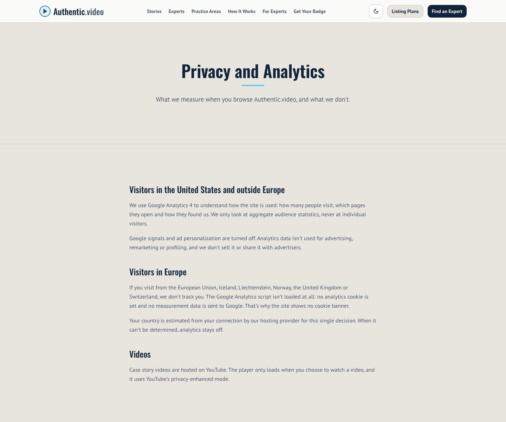
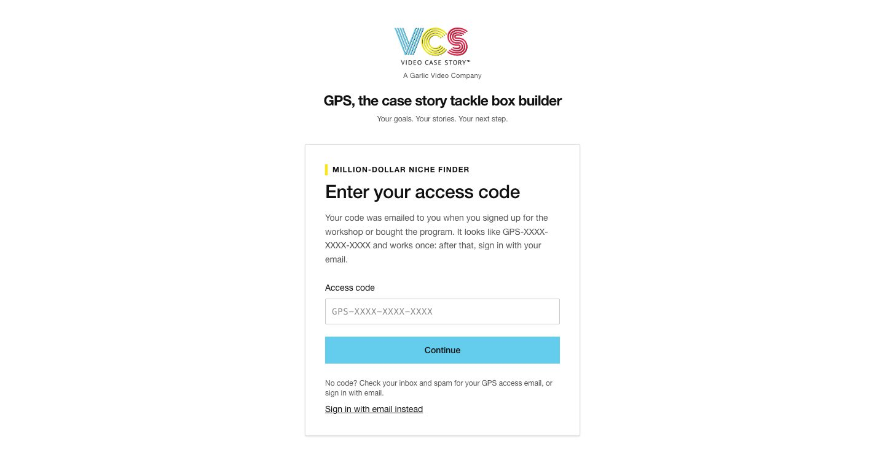
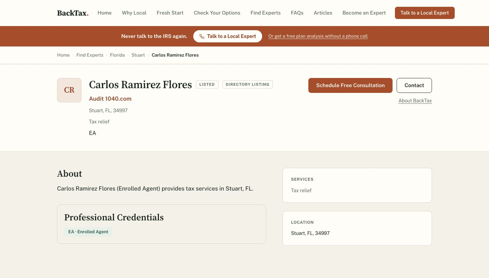
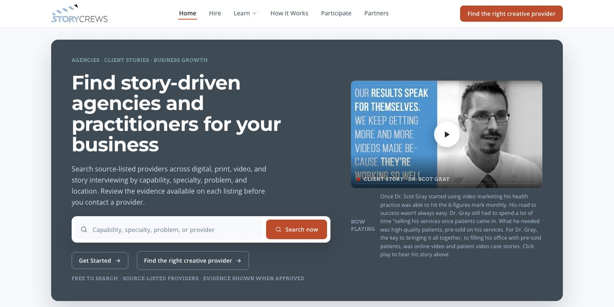
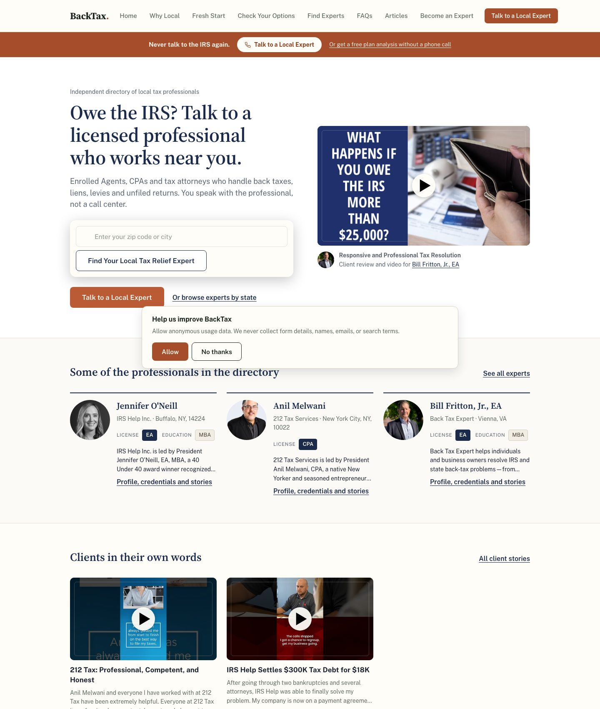
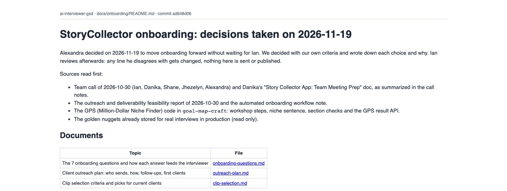

What we moved forward on recently, where each piece stands, and a link you can open to check it. Live pages were checked on Nov 20.
A privacy page linked from the footer. Google Analytics only loads outside Europe, so European visitors aren't tracked and the site needs no cookie banner.

The Million-Dollar Niche Finder opens with a single-use access code sent by GHL. The GHL workflows for issuing codes and the 48h inactivity follow-up were published on Nov 20; the benefit email series is still a draft.

Every published BackTax listing can now be indexed by Google and is in the sitemap, as you approved on Nov 13. The directory now lives at taxreliefnearme.org (the old besttaxhelp.org redirects there).

StoryCrews re-skinned to its 2021 brand identity.

Homepage and expert profile concepts answering your Nov 17 brief: one “Talk to a Local Expert” button, a real client video, and a legend for the badges. Not live yet, because publishing them replaces the production site.

Hooks generated from the client's GPS niche and services using fixed templates (no AI), with a saved shortlist and a /hooks page linked from the TackleBox home. The code is in the GPS app's repository, but the app hasn't been republished on Lovable, so the page isn't online yet.
Seven onboarding questions modeled on the GPS, a client outreach plan with three drafted emails, and 24 clips picked from nine real interviews, with 10 decisions and the reason for each. It's written down for your review; nothing is in the app or sent yet.

We want to run the Canva test design ourselves, but the skill's files aren't anywhere we can reach: the repository we have only holds a README. We need to know where the skill lives, or a go to rebuild it.